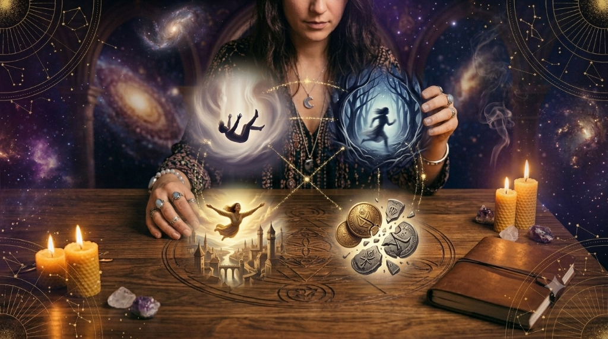

Cada noche, al cerrar los ojos, nos adentramos en un territorio donde las leyes de la física, el tiempo y la lógica dejan de existir. El plano de los sueños es una dimensión fascinante donde nuestra mente consciente se retira para dar paso al subconsciente, un motor creativo y profundamente intuitivo que procesa nuestros miedos más ocultos, anhelos silenciados y verdades espirituales que a menudo ignoramos durante el día.

Para muchos, un sueño no es más que una película caótica provocada por el cansancio. Sin embargo, desde la psicología profunda hasta las tradiciones místicas más antiguas, sabemos que soñar es un acto de comunicación sagrada. Tu mente no se limita a proyectar imágenes al azar; te está hablando en un lenguaje puramente simbólico. Aprender a descifrar este código no solo te otorga un autoconocimiento brutal, sino que te ofrece una brújula perfecta para tomar decisiones en tu vida consciente.
El lenguaje del subconsciente: ¿Por qué soñamos en metáforas?
Si el subconsciente quisiera decirnos que estamos sufriendo un nivel de estrés intolerable en nuestra rutina, no nos proyectaría un gráfico de rendimiento bajo o una agenda llena de tareas pendientes. En su lugar, es muy probable que nos haga soñar que caemos al vacío, que estamos atrapados en un laberinto sin salida o que intentamos gritar y no nos sale la voz.
El cerebro profundo no utiliza el lenguaje verbal estructurado; utiliza arquetipos y emociones. Una imagen en un sueño es un contenedor de múltiples significados. Por ejemplo, el agua no es solo un líquido; representa la fluidez de tus emociones. Si sueñas con un mar en calma y cristalino, tu mundo interior goza de una paz y claridad excepcionales. Si, por el contrario, te encuentras frente a una ola gigante de agua turbia, tu subconsciente te advierte de que te sientes desbordado por una situación emocional que no sabes cómo gestionar.
Aprender a interpretar los sueños no consiste en abrir un manual rígido y aplicar la misma definición para todo el mundo. La clave reside en cruzar el significado universal del símbolo con la emoción exacta que sentiste durante la experiencia onírica.
Los 4 sueños más comunes del ser humano y sus verdaderos significados
A pesar de que cada vida es única, la experiencia humana comparte ciertos patrones. Existen temáticas universales que se repiten en todas las culturas y épocas. Analicemos qué significan realmente las cuatro visiones nocturnas más frecuentes:
1. Soñar que te persiguen
Es, sin duda, una de las experiencias más angustiantes. Te encuentras corriendo por un callejón oscuro o un entorno desconocido, sintiendo la presencia inminente de alguien o algo que te pisa los talones.
La interpretación: Este sueño rara vez habla de un peligro físico real. En la inmensa mayoría de los casos, aquello que te persigue es una situación, un problema o una emoción de la que estás intentando huir en tu vida real. Puede ser una conversación difícil que estás posponiendo, una decisión importante que te da pánico tomar o una parte de tu propio pasado que no has querido sanar. Tu mente te está diciendo: deja de correr y date la vuelta para solucionarlo.
2. Soñar que caes al vacío
Te despiertas de golpe, con el corazón acelerado y la sensación física real de haber tropezado o caído desde una gran altura.
La interpretación: La caída está directamente vinculada al control y la inseguridad. Suele aparecer en periodos de grandes cambios donde sientes que el suelo firme bajo tus pies se desvanece temporalmente. También refleja el miedo al fracaso o la incapacidad de cumplir con las expectativas que te has impuesto a ti mismo o que tu entorno ha depositado en ti.
3. Soñar que vuelas
Una de las sensaciones más liberadoras y lúcidas que existen. Te elevas por encima de las ciudades, los árboles o las montañas con total ligereza y control.
La interpretación: Volar representa la liberación de cargas y la ganancia de perspectiva. Indica que has logrado superar un obstáculo que te atormentaba o que estás experimentando una profunda expansión mental. Te estás elevando por encima de los problemas terrenales para ver las cosas desde arriba, con mayor claridad.
4. Soñar que pierdes los dientes
Te miras en un espejo o simplemente notas en la boca que tus dientes comienzan a aflojarse, a romperse en pedazos o a caerse uno a uno.
La interpretación: En el misticismo antiguo, este sueño se asociaba erróneamente a augurios negativos. Hoy en día, la interpretación evolutiva sabe que los dientes son nuestra herramienta de defensa, poder y seguridad. Soñar que se caen refleja miedo al paso del tiempo, pérdida de seguridad o una profunda sensación de vulnerabilidad e impotencia frente a una situación donde sientes que has perdido tu autoridad o tu capacidad de decisión.
Pasos prácticos para entrenar tu mente y recordar tus sueños
Uno de los mayores obstáculos para quienes desean explorar este mundo es la famosa frase: "Es que yo nunca sueño". Científicamente, todo el mundo sueña varias veces cada noche durante la fase REM. Lo que ocurre es que borramos los recuerdos al despertar. El cerebro desecha esa información si no le damos la orden consciente de que es importante para nosotros.
Si quieres activar tu memoria onírica, sigue este sencillo protocolo durante una semana:
- Declara tu intención antes de dormir: Al acostarte, mientras cierras los ojos, repite mentalmente tres veces: “Mañana al despertar recordaré mis sueños con total claridad”. Puede sonar simple, pero prepara al subconsciente para mantener el canal abierto.
- No te muevas al despertar: El movimiento físico activa las funciones motrices del cerebro consciente y borra instantáneamente la memoria volátil del sueño. Cuando abras los ojos por la mañana, quédate completamente quieto durante un minuto y trata de "tirar del hilo" de la última imagen o emoción que recuerdes.
- Mantén un registro inmediato: Ten siempre un bloc de notas o una libreta dedicada exclusivamente a esto en tu mesita de noche. Anota todo, por muy absurdo, fragmentado o caótico que parezca. Con el tiempo, verás que esos fragmentos empiezan a formar historias coherentes.
Conclusión: El mapa de tu alma
Los sueños no son un misterio indescifrable ni un capricho cerebral; son el mapa de navegación que tu propia mente dibuja cada noche para ayudarte a comprender tu presente. Aprender a escucharlos es el acto de introspección más profundo que puedes realizar, un puente directo hacia tu paz mental y tu evolución personal.
🔮 Continúa explorando tu subconsciente: Si esta noche has tenido una experiencia onírica intensa y quieres profundizar en las imágenes que has visto, te invitamos a consultar nuestro buscador interactivo en la sección de Sueños. Introduce el elemento principal de tu visión y descubre qué mensaje está intentando transmitirte tu voz interior hoy mismo.